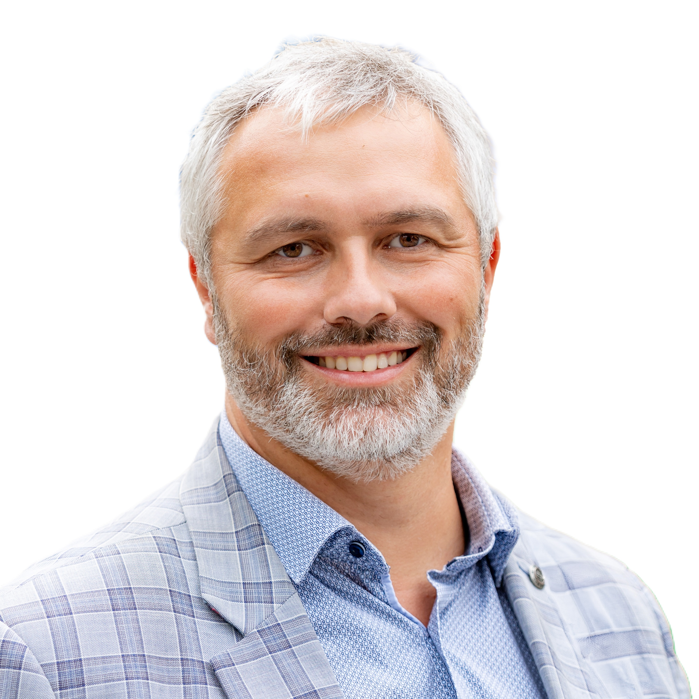
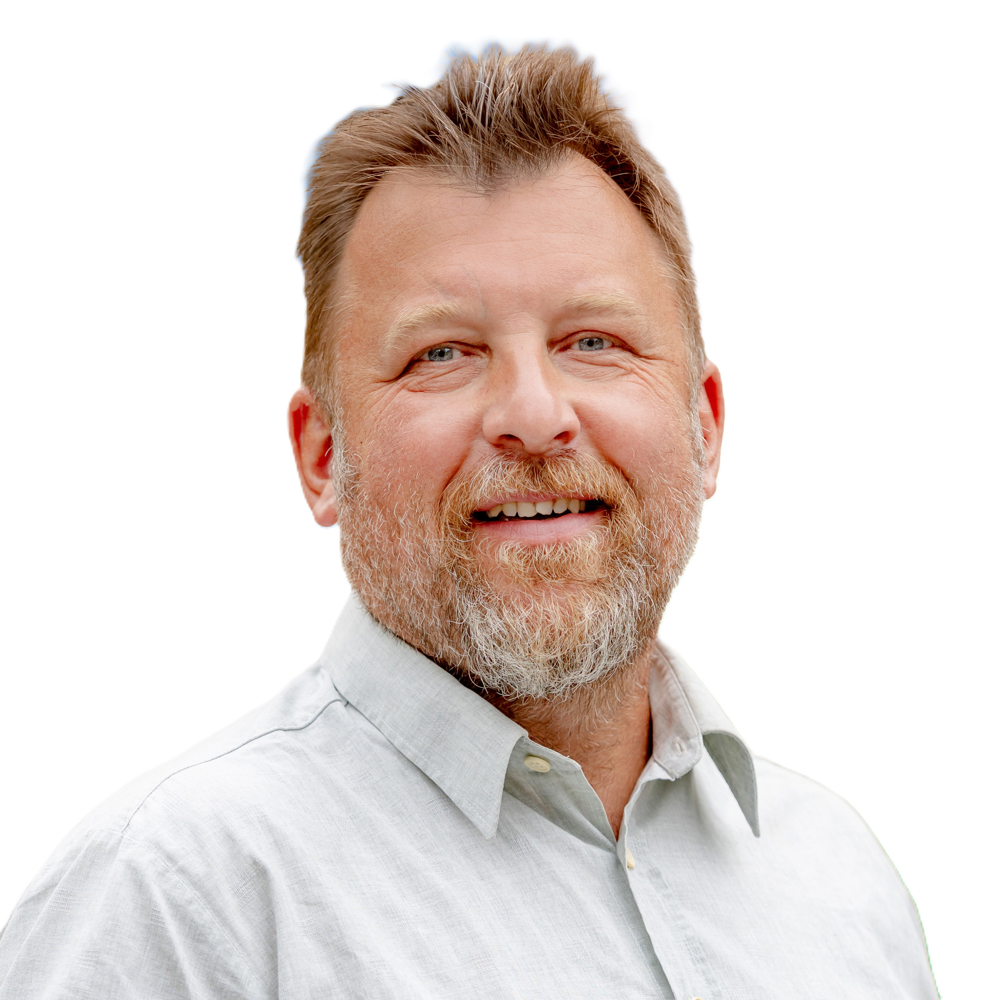
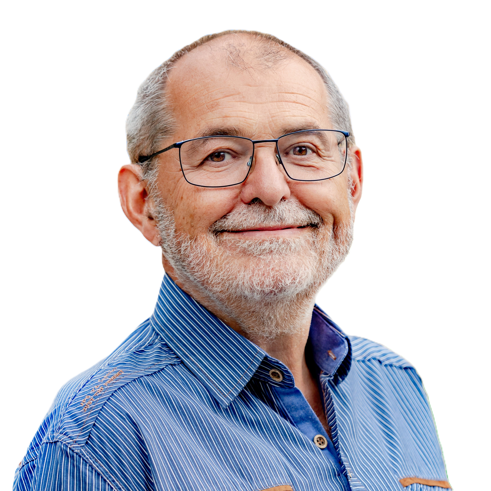
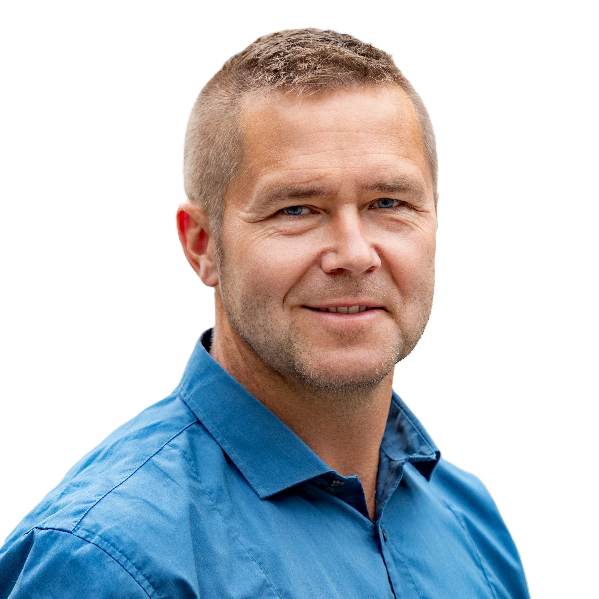

Pracujeme
pro Rtyni
Jsme Rtyňáci – váš tým v zastupitelstvu města
v čele se starostou Karlem Šafářem.
Aktuality
Náš tým



Kontakt
Napište nám
Buďte s námi v kontaktu.
Jsme Rtyňáci – váš tým v zastupitelstvu města
v čele se starostou Karlem Šafářem.




Kontakt
Buďte s námi v kontaktu.